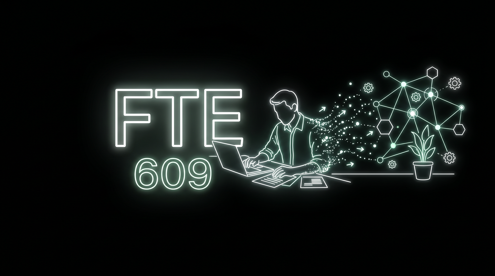
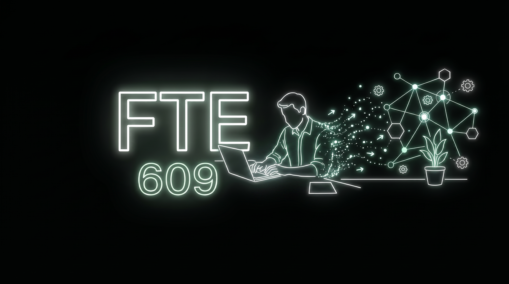
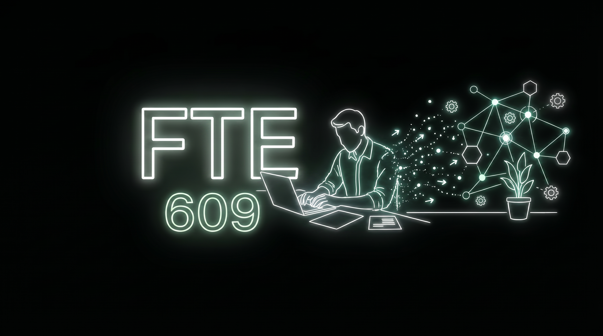

FTE — обе руки на ноутбуке
Edit по np3: только руки переставлены на ноут, остальное (FTE 609, сеть, точки, растение) — как было. Выбери вариант.
оригиналрука была на бумаге
вариант h4обе руки на ноуте
вариант h6обе руки на ноуте, наклон чуть больше
вариант h5третий (если уже досчитался)